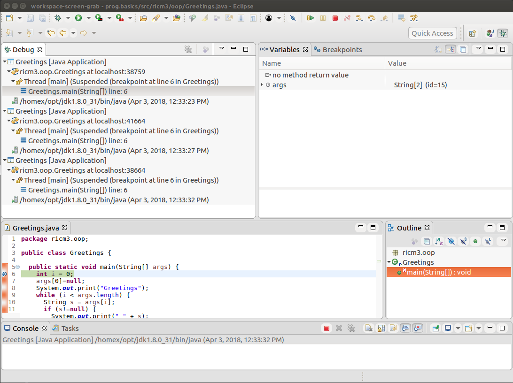
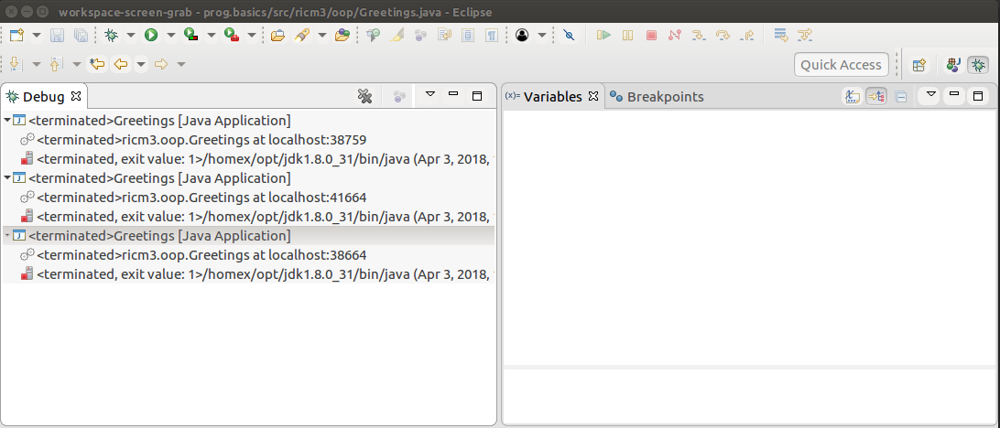

So we just finished our class
Greetings
in a brand new Java project hello.greetings.
It is time to understand a bit more about the
method
main.
We will explain what it does, we will execute it
under the control of the Eclipse debugger, one
of the best tools when developing in Java.
The method
main
is the entry point in your program, that is, it is
where the execution will start. The method
is defined with one argument whose value
is an array of strings.
public static void main(String[] args) {
...
}
But what are those strings about and where are they coming from?
These strings are the program arguments.
OK, but what are program arguments?
When launching a program, you can provide arguments like
this:
So we provided three arguments, as three strings "Neo", "and", and "Morpheus".
Note that arguments are just any sequence of characters, separated by one or more
spaces.
Let's now look at more of the code of the method main:
package hello.greetings;
public class Greetings {
public static void main(String[] args) {
System.out.print("Greetings");
int i=0;
while (i < args.length) {
System.out.printf(" %s",args[i]);
i = i+1;
}
System.out.println("!");
return;
}
}
This code may be your first Java code. So rather than explaining on paper,
we are going to execute under the control of the Eclipse debugger,
so that you can see for yourself what it means to execute a program.
Interested? Great, let's get started.
A debugger is a tool
that allows you to control the execution of a program, controlling
its every step.
If you are familiar with programming, you certainly
understand the code already. You may even have experience with
using a debugger already. So go through the following paragraphs
quickly, then go find someone who is struggling and help
him or her.
Remember, this is Agile Learning
and we are all responsible
for the success of everyone in the team. If you are a beginner and you
are struggling in the following paragraphs,
go find someone that has more experience than you and ask for help.
If you are a beginner, do not worry, just jump in the code. Use
the debugger as you best friend to help watch the execution unfold,
to help you understand what is going on. Chances are, you will
struggle on some finer points, but you should get a general idea
of what is going on without much of a struggle, thanks to using a debugger.
Eclipse has one of the greatest debugger for Java, if not the greatest.
We already executed under the control of Eclipse, remember? Now we want
to control that execution with the debugger. So select the class
Greetings with a right-click
and select "Debug as" this time as opposed to "Run as".
You could also via the debugger icon
 ,
selecting the drop-down menu with the little black triangle
and then selecting the Java class you want to execute.
In this case, select Greetings.
,
selecting the drop-down menu with the little black triangle
and then selecting the Java class you want to execute.
In this case, select Greetings.
 ,
en sélectionnant le menu avec le petit triangle noir
puis en sélectionnant la classe Java que vous voulez exécuter.
Dans notre cas, selectionnez Greetings.
,
en sélectionnant le menu avec le petit triangle noir
puis en sélectionnant la classe Java que vous voulez exécuter.
Dans notre cas, selectionnez Greetings.
The execution ran and stopped, right? You didn't see anything new,
did you? Well, we didn't ask the debugger to stop the execution.
So let's set a breakpoint in the method
main(String[]),
in the class Greetings
in the package
hello.greetings.
To do so, double click
on the left hand-side edge of the Editor view, at the first
line of the main(String[]).
You should see a small round blue bullet on that left hand-side edge,
line 6, just like this:
So launch the execution again, under the debugger control,
now the execution will stop at the first line of the
method
main(String[]),
in the class Greetings,
where you setup your breakpoint.
This is what you should see:
Single stepping through an execution is actually the best way
to realize what an execution is. We will do this by launching
the execution under the control of the Java debugger.
Since the execution is stopped, you can advance one step
at a time, this is called single stepping.
But before we do that,
let's notice the different views in the Debug perspective.
Of course, you can see the source. Notice that the debugger
automatically browsed to the correct source, at the correct line,
where the execution was suspended at.
Look at the Debug view, it shows you where you are suspended,
more globally. It tells you that you are debugging a Java Application.
It tells you that the application hello.greetings.Greetings
and that it runs on the localhost (your machine). Thankfully, this is
all true, right? This is what we did, we launch the class
Greetings and it executes on your machine.
The Debug view also tells you that the thread main
is suspended by a breakpoint
at line 6 in HelloWorld. The concept of thread is just another
name for an execution flow. All Java programs have at least one
execution flow, called as Thread [main].
Also look at the Variables, it shows you the local variables
and arguments of your program. In this case, we can see the argument
"args" and it is an empty array (see the printed value as "[]").
We will come back to this Variables view later, because it is
a powerful tool for you to master. But for now, be curious, click on
the args, see that it is an array of strings. An array is
an ordered collection of elements, in this case, the elements are strings.
Click around and see for yourself, the strings are the one you typed as
arguments, in the debug configuration earlier.
Finally notice the debugger toolbar, with all the icons to control
the execution of your program. Each icon does something different and
is associated with a keybord shortcut.
We will start with the only two you need right now, we will
cover the others later as we will need them.
You will be a master of debugging when you are
done with this workshop.
OK, so let's single step, using F6. You should see something like
this, where the execution moved onto the next line.
Note: if nothing
happens when you hit F6,
you need to give the focus to the debugger, clicking your mouse
in the source. What does it mean to give the focus? It means that your key strokes
are given to the Eclipse debugger and not to another program/window.
Note: Si rien ne se passe quand vous cliquez sur F6,
vous devez donner le focus au debugger, en cliquant votre souris dans
les sources. Que signifie donner le focus?
Cela signifie que ce que vous tapez sur le clavier est dirigé vers
le debugger et non pas vers d'autres fenêtres/programmes.
So what happened?
Keep on hitting F6, you will single step throughout the entire
execution. Until you reach the line 12, with the return statement.
At that line, hit F8 to resume the execution and let it finish.
Following the execution step by step, you will see the code
print each string in the array of arguments,
called args. Look at the value of the variable i,
starting at zero and then incrementing to the value 2.
In particular, look at the array of arguments, called
args. It may look like this:
The array and the strings it references are all objects, this is why
Java is called an object-oriented programming language, it manipulates
objects. The Eclipse debugger is kind enough to show us the identities
of objects, so we can distinguish them.
The array is an object, with the identity (id=15). The first
string "Albert" is also an object and it has the identity (id=24).
The second string "Einstein" is another object and it
has the identity (id=28).
The numbers might be different on your screen, since your objects
might have different identities in your execution.
A few details might escape you, if you are a beginner, but the overall
meaning of what is happening should be pretty easy to understand.
A program manipulates values and objects. It does so by following a recipe,
composed of statements. The execution flows through
the statements, written in the source. Sometimes, the execution flows
loops around to execute the same statements several times. Ultimately,
the execution reaches the end of the recipe and terminates.
You missed something the first time around, no problem at all.
You can start again the execution,
and try again. Don't forget to look at the values of the variables,
at each step, in the Variables view on the upper-right corner
of the Eclipse window.
This is important: remember to take charge of your learning.
So go ahead, use the debugger and explore what it means to execute
a program. You will see how the execution flows through the
various statements of the program. Use the debugger to print
the values of variables. You will see, this is not that hard.
You need only two commands for now: F6 and F8.
You will also need to go click around in the Variables
view to look at the values contained in variables at each step.
You can start exploring what programming
is about. Welcome to a new world. Have fun discovering how programming
works. To help you, let us point out what you should be looking at
at this stage in the
class Greetings.
The execution of a program will always start at the first line
of the method main
of the class given when launching the Java Runtime Environment.
The execution progresses one statement at a time.
A statement typically ends with ";" like in this example:
int i=0;
That statement defines a variable named "i" and assign the integer value
"0" to it. Use the debugger (the Variable view) to see
the value of any variable.
Most of the time, the execution proceeds sequentially,
one statement after another, in the lexical order they
appear in the source. So go ahead, use the debugger
"next" command to execute the program,
one statement at a time.
Now, notice what happens when the execution flows
through the
while statement.
The construct allows you to write a lexical block of code
between "{...}"
and loop over that block while a condition is true.
When the
condition becomes false, the execution continues in
sequence after the block of the code.
This is what we do here over the arguments. The arguments
are available in a array of strings. An array is an ordered
sequence of elements. So the code prints each argument,
starting with printing the first and stopping after the last.
The following code snippet would print the integer
numbers from 0 to 10:
int i=0;
while (i < 10) {
System.out.println(" i="+i);
i = i + 1;
}
Through debugging, it is easy to get the intuition of
what a variable is.
A variable is a named storage box that contains a value.
Pretty much like naming a shoe box on a shelf.
The variable is typed, telling what kind of values the box
can store. Below is the definition of the variable
i,
its type is int,
which means the variable can store integer values.
int i=0;
The variable s is a bit different,
it is called a reference. You can see it is typed as
a String.
String s;
In Java, strings are objects, they are not primitive values
like integers. Integers can be stored in variables, but objects
cannot. Objects, like strings, are too big to fit in the storage box,
but their identity can fit.
Think of it this way: a person is too big to
fit in a shoe box, on a shelf in your closet,
but his or her phone number written on a piece of paper can.
A phone number uniquely identifies a single person; if you
have a phone number, you know the person it identifies.
Even better, a phone number allows to call that person
and ask for a service. References will allow us to do
the same with objects. For example, if you want a string
to tell you how long it is (meaning how many characters it contains),
you can just ask like that:
String s = "Hello !";
int length = s.length();
Notice the dotted notation "s.length()". You should
read it as "ask the object referenced by the variable s
to execute the method named "length". This is how
you ask an object to render a service, by invoking
a method on an object.
For instance, this is how you print a string:
1 String str = "Hello !";
2 PrintStream ps = System.out;
3 ps.println(str);
Line 2, the variable "ps" that holds a reference to an object
that is a print stream. It is the object that knows how to
print on the screen. Line 3, that object is requested
to print the string referenced by the variable "str".
If you try that snippet of code, you will see that it
does print the string "Hello !" in the Eclipse console.
So go ahead, create a new class, with a main method
that contains these lines then execute your code under
the control of the debugger. You should know how to do it
by now.
Are you feeling a bit confused right now?
Don't worry, we will come back many times
on discussing variables and especially reference variables.
In just a few weeks, all these concepts will be crystal clear
and you will be using them easily without even thinking twice
about it.
Look at the code snippet below, it is a loop that prints all the
strings referenced from the array "args".
1 public static main(String args[]) {
2 int i = 0;
3 while (i < args.length) {
4 String s = args[i++];
5 System.out.println(s);
6 }
7 }
If you copy this code into your own class, with a main
entry point, executing that class will print all
the strings you pass as arguments when launching the execution.
Notice that it will print one string per line. This is what
the method println does.
You can print all strings on a single line, separated with commas,
just like this:
1 public static main(String args[]) {
2 int i = 0;
3 while (i < args.length) {
4 String s = args[i++]+", ";
5 System.out.print(s);
6 }
7 }
Notice that we used the method print
instead of the method println.
Notice also that we use the '+' operator on strings that
concatenates two strings.
Java also supports a C-style-printf, if you know the C programming language already, it might be useful:
1 public static main(String args[]) {
2 int i = 0;
3 while (i < args.length) {
4 String s = args[i];
5 System.out.printf("args[%d]: %s\n",i,s);
6 i = i + 1;
7 }
8 }
Try out this different versions, see what is happening.
Watch the local variable s
under debugger,
you can watch the values it takes throughout the loop.
Pay attention to the difference between using print
and println. The former only prints the given string.
The latter also prints the given string but the cursor goes
the begining of the next line (in fact, the combination
of a line feed and a carriage return).
This is quite simple, it tells the execution to quit the
current method. In our case, since we are executing the
entry point, which is the first and only method, leaving
the main method means that the execution should finish.
If you are experiencing some difficulties, understanding the
program, this is not the end of the world, do not worry, we will come
back on all these concepts. Still, go ask around for help,
get some explanations
in order to get a feel for what is happening. Try stuff. In no time, you will
write your own code, if you take charge of your learning and you
are proactive about it.
Congratulations, you observed your first execution of a
Java program by experiencing it directly under the control
of a debugger. You have just entered in a new world,
the world of computer programming.
Welcome to this new world. But let's keep it clean, shall we?
Does your Eclipse Debug perspective looks like this?

Oh well, this is not a good thing. Look at your Debug
view, you have many executions running... Is that really what
you wanted? Probably not, you have probably forgotten to terminate
the executions that you are no longer interested in. Right?
Eclipse allows you to execute
many programs at the same time, even debug them at the same time.
In some advanced debugging scenario, it is a great feature. At
your level, it probably means that you are just not terminating
executions. But why should we terminate executions?
Let's use a painter analogy. The painter starts painting on a new
canvas. Then he is interrupted before he finishes his painting.
Then he starts another painting, on another new canvas. And again.
And again. What happens?
That painter will run out of canvases. If he is not running out of canvases,
he will keep buying them from the Web and his house will overflow with canvases.
Not a great situation, is it?
Rather than reusing a new canvas each time, if the current painting is
unsatisfactory, the painter can start over on the same canvas.
This is the same with Eclipse. Every time you start an execution, Eclipse
will use a brand new instance of a Java Runtime. So if you keep starting
new executions without terminating the old ones, Eclipse will use more and
more instances of the Java Runtime. Is this a problem?
Sure it is. The ressources in your computer are not infinite and each Java
Runtime, like any other program, consumes resources. When your computer will
start running out of resources, it will first slow down... and then crawl
to a halt... becoming sundenly unusable. Not a good thing, at all.
So please, terminate the executions that you no longer need. Select them in the Debug view and then click on the red square icon in the debugger toolbar:
It will then look like this, with a cluttered Debug view:
You can get back a clean Debug view by clicking the icon.
Congratulations! Nice clean up.
Did you take notes? Did you create a cheat sheet for yourself?
If you did, fantastic! If you did not, again, how much of all
this will you remember next week? Again, at the end of this
first semester, we can clearly see two groups of students.
Those that will master Eclipse and debugging, remembering
the keyboard short-cuts and advanced functionalities, and the
other students, stuck with using only the simplest functionalities
of Eclipse and its Java debugger. Again, who do you think will
come on top? Not only having better grades, but also working faster
and therefore having more time for having fun. Your choice.